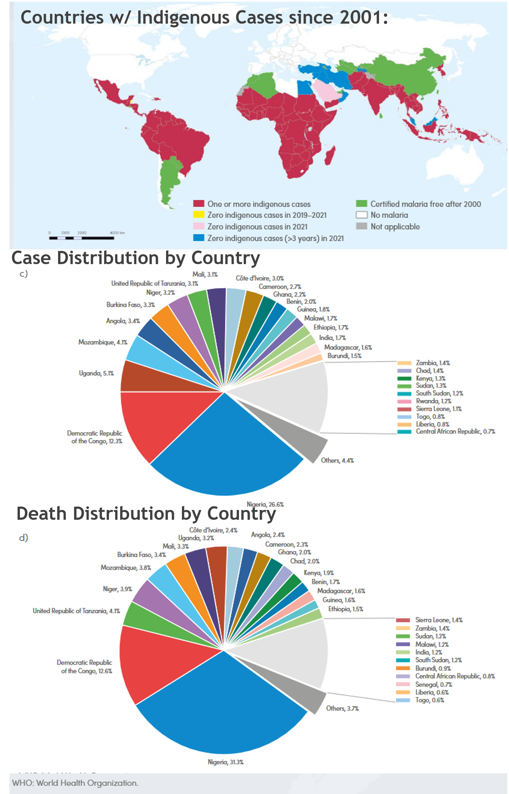
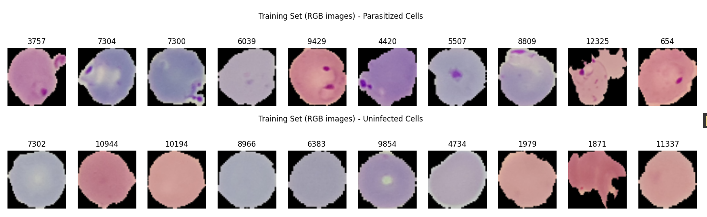
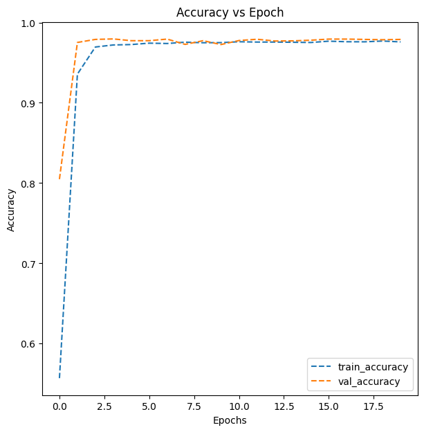
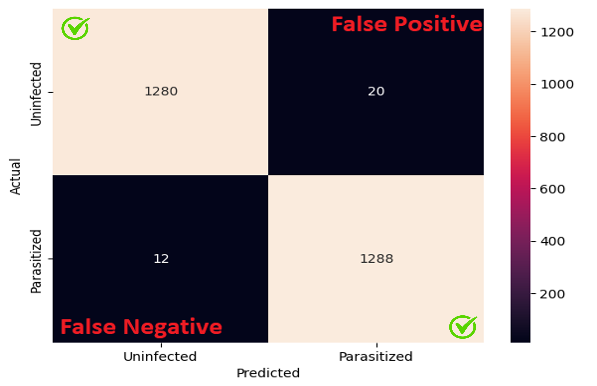

Background
In 2021, there were 247M cases of Malaria worldwide. Late detection and treatment of the disease can prove fatal. Advancements in image recognition have the potential to drastically reduce the resources involved in receiving a diagnosis, enabling low-cost early detection tools to be deployed in remote areas with limited access to healthcare.

Dataset
Dataset consisted of 25,000 images of stained red blood cells from the U.S National Insititute of Health. Each image was labeled as either "Parasitized" or "Uninfected". Data augnmentation techniques were to expand the dataset and prevent generalization.

Model Architecture
In Jupyter Notebooks, used Python and TensorFlow to build a CNN model that included:
- Leaky ReLu layers to prevent vanishing gradients.
- Batch Normalization and Dropout layers to prevent overfitting.
- Max Pooling layers for dimensionality reduction.

Results & Outcomes
Trained model to priorize minimizing false negatives while optimizing for low computational requirements.
- Accuracy of 98.8% on test data set. 2568/2600 correct diagnoses.
- Time to execute: 1.32s for batch.
- Memory required: 1.06MB. Deployable on Chromebook.
